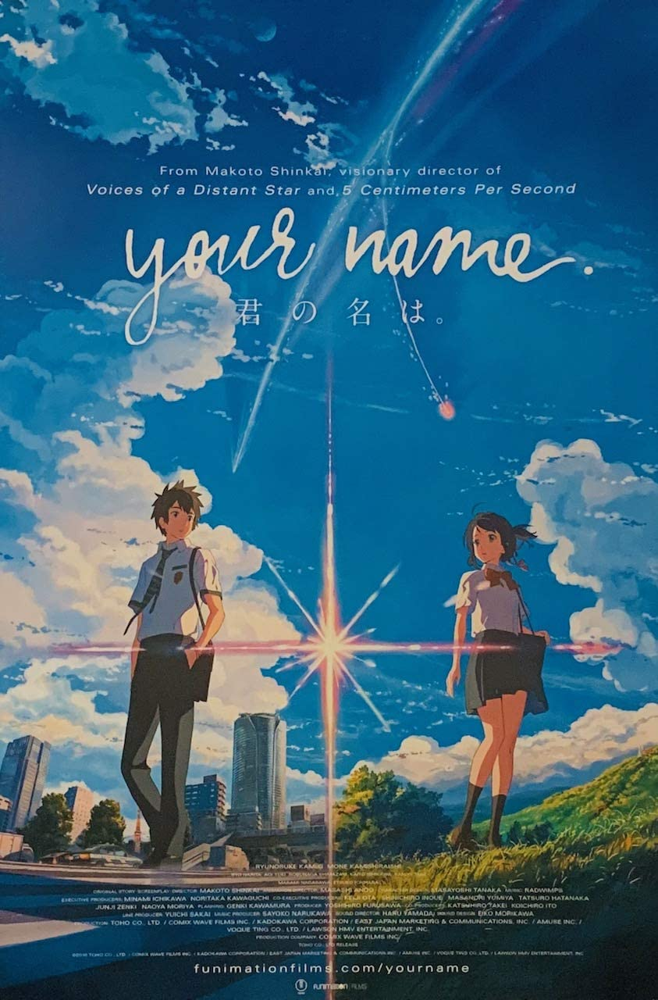
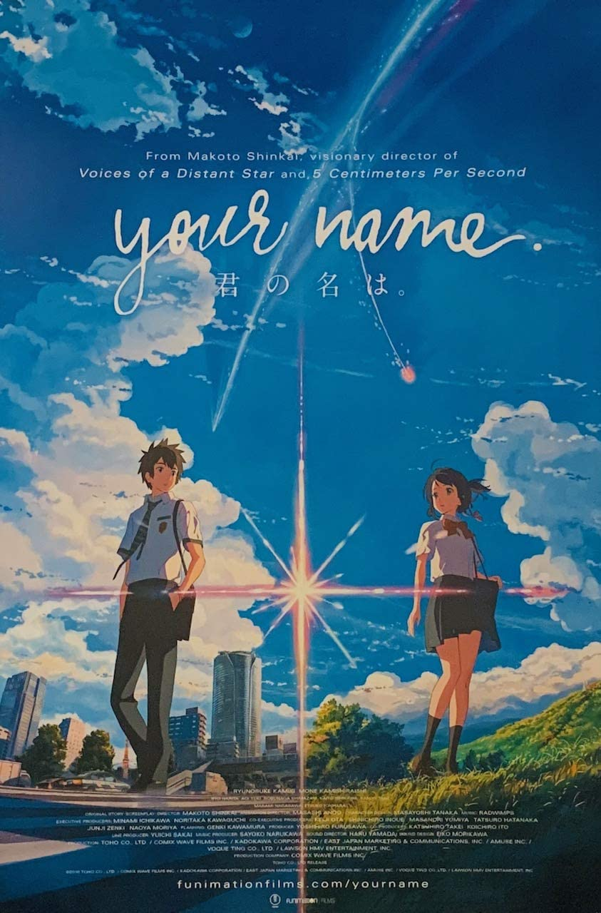

My Top 5 Movies
The Girl Who Leapt Through Time
5 Centimeters Per Second
The Garden of Words
Spirited Away
Your Name
The Girl Who Leapt Through Time (時をかける少女, Toki o Kakeru Shōjo) is a 2006 Japanese-animated science fiction romance film produced by Madhouse, directed by Mamoru Hosoda and written by Satoko Okudera. Released by Kadokawa Herald Pictures, the film is a loose sequel to the 1967 novel of the same name by Yasutaka Tsutsui and shares the basic premise of a young girl who gains the power of time travel and repeatedly relives the same day in a time loop, but with a different story and characters than the novel. Riisa Naka voices teenager Makoto Konno, who learns from Kazuko Yoshiyama, Makoto's aunt and the protagonist to the original story, that Makoto has the power to travel through time. Makoto begins using the time-leaps frivolously to fix problems. The Girl Who Leapt Through Time was released on July 15, 2006, and received positive reviews. The film won numerous awards, including the Japan Academy Prize for Animation of the Year. The English version was licensed and produced by Kadokawa Pictures U.S., with dubbing supplied by Ocean Productions, and released by Bandai Entertainment in 2008 and re-released by Funimation in 2016.
Back to top5 Centimeters per Second (Japanese: 秒速5センチメートル, Hepburn: Byōsoku Go Senchimētoru) is a 2007 Japanese animated romantic drama film by Makoto Shinkai. It theatrically premiered on 3 March 2007. The film consists of three segments: "Cherry Blossom", "Cosmonaut", and "5 Centimeters per Second", each following a period in Takaki Tōno's life and his relationships with the girls around him. The film was awarded Best Animated Feature Film at the 2007 Asia Pacific Screen Awards. It received a novelization in November 2007,[3] and a manga adaption illustrated by Seike Yukiko in 2010.
Back to top
The Garden of Words (Japanese: 言の葉の庭, Hepburn: Kotonoha no Niwa) is a 2013 Japanese anime drama film written, directed and edited by Makoto Shinkai, animated by CoMix Wave Films and distributed by Toho. It stars Miyu Irino and Kana Hanazawa, and features music by Daisuke Kashiwa instead of Tenmon, who had composed the music for many of Shinkai's previous films. The theme song, "Rain", was originally written and performed by Senri Oe in 1988, but was remade for the film and was sung by Motohiro Hata. The film was made into a manga, with illustrations by Midori Motohashi, and later novelized by Shinkai, both in the same year as the film. The film focuses on Takao Akizuki, an aspiring 15-year-old shoemaker, and Yukari Yukino, a mysterious 27-year-old woman he keeps meeting at Shinjuku Gyoen National Garden on rainy mornings. While Takao is skipping his morning class to design shoes, Yukari is avoiding work due to personal problems in her professional life. Yukari tells Takao nothing about herself, including her name, while Takao opens up to her, sharing his passion for shoes by offering to make a pair for her. When Takao learns Yukari's identity, emotions come to a head as both learn that they have been teaching each other "how to walk". Shinkai wrote the story as a tale of "lonely sadness", based on the meaning of the traditional Japanese word for "love", and uses shoes as a metaphor for life. The story's motifs include rain, Man'yōshū poetry, and the Japanese garden. The age difference between the two main characters and their character traits demonstrate how awkwardly and disjointedly people mature, where even adults sometimes feel no more mature than teenagers, according to Shinkai.
Back to top
Spirited Away (Japanese: 千と千尋の神隠し, Hepburn: Sen to Chihiro no Kamikakushi, 'Sen and Chihiro’s Spiriting Away') is a 2001 Japanese animated fantasy film written and directed by Hayao Miyazaki, animated by Studio Ghibli for Tokuma Shoten, Nippon Television Network, Dentsu, Buena Vista Home Entertainment, Tohokushinsha Film, and Mitsubishi.[6] The film stars Rumi Hiiragi, Miyu Irino, Mari Natsuki, Takeshi Naito, Yasuko Sawaguchi, Tsunehiko Kamijō, Takehiko Ono, and Bunta Sugawara. Spirited Away tells the story of Chihiro Ogino (Hiiragi), a 10-year-old girl who, while moving to a new neighbourhood, enters the world of Kami (spirits of Japanese Shinto folklore).[7] After her parents are turned into pigs by the witch Yubaba (Natsuki), Chihiro takes a job working in Yubaba's bathhouse to find a way to free herself and her parents and return to the human world. Miyazaki wrote the script after he decided the film would be based on the 10-year-old daughter of his friend Seiji Okuda, the movie's associate producer, who came to visit his house each summer.[8] At the time, Miyazaki was developing two personal projects, but they were rejected. With a budget of US$19 million, production of Spirited Away began in 2000. Pixar animator John Lasseter, a fan and friend of Miyazaki, convinced Walt Disney Pictures to buy the film's North American distribution rights, and served as executive producer of its English-dubbed version.[9] Lasseter then hired Kirk Wise as director and Donald W. Ernst as producer, while screenwriters Cindy and Donald Hewitt wrote the English-language dialogue to match the characters' original Japanese-language lip movements
Back to topYour Name (Japanese: 君の名は。, Hepburn: Kimi no Na wa) is a 2016 Japanese animated romantic fantasy film written and directed by Makoto Shinkai, and produced by CoMix Wave Films. It was produced by Kōichirō Itō and Katsuhiro Takei, with animation direction by Masashi Ando, character designs by Masayoshi Tanaka, and music composed by Radwimps. Your Name tells the story of a high school boy in Tokyo and a high school girl in a rural town, who suddenly and inexplicably begin to swap bodies. The film stars Ryunosuke Kamiki and Mone Kamishiraishi. Shinkai's eponymous light novel was published a month before the film's premiere. Your Name was distributed by Toho. It premiered at the Anime Expo 2016 convention in Los Angeles, California, on July 3, 2016, and in Japan on August 26, 2016. It was critically acclaimed for its animation, complex narrative, musical score, and emotional weight. The film was also a major commercial success, with a total gross of $358 million. As of 2021, it is the third highest-grossing anime film and Japanese film worldwide of all time, the fifth-highest-grossing film of all time in Japan, the tenth-highest-grossing traditionally animated film, and the 19th-highest-grossing non-English film worldwide. The film won the Best Animated Feature Film award at 49th Sitges Film Festival, the 2016 Los Angeles Film Critics Association Awards, and the 71st Mainichi Film Awards, as well as receiving a nomination for the 40th Japan Academy Prize for the Best Animation of the Year.[3] A live-action remake set in the United States is currently in development by Paramount Pictures.
Back to top